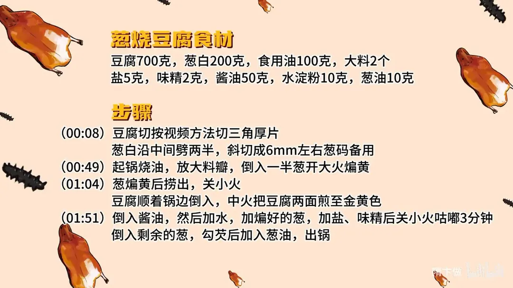

葱烧豆腐
隋卞一做。家常菜之王。葱要切马蹄块、煸到金黄，豆腐先煎后咕嘟。
原视频：https://www.bilibili.com/video/BV1jw411V7XD
食材
豆腐、葱白、食用油 等 9 样
| 类别 | 用料 | 用量 |
|---|---|---|
| 主料 | 豆腐 | 700g |
| 主料 | 葱白 | 200g |
| 调料 | 食用油 | 100g |
| 调料 | 大料 | 2 个 |
| 调料 | 盐 | 5g |
| 调料 | 味精 | 2g |
| 调料 | 酱油 | 50g |
| 调料 | 水淀粉 | 10g |
| 调料 | 葱油 | 10g |
步骤
- 备料：豆腐切成三角厚片；葱白沿中间劈两半，斜切成 6mm 左右的葱码备用。
- 煸葱：起锅烧油，放大料瓣，倒入一半葱开大火煸黄。
- 煎豆腐：葱煸黄后捞出，关小火；豆腐顺着锅边倒入，中火把豆腐两面煎至金黄色。
- 咕嘟：倒入酱油，然后加水，加煸好的葱，加盐、味精后关小火咕嘟 3 分钟；倒入剩余的葱，勾芡后加入葱油，出锅。
小贴士
- 葱分两次下：一半煸出葱油打底，一半最后下保留葱香和口感。
- 豆腐顺锅边滑入，不要直接扔，避免溅油和碎块。
讲解要点
难度：★★☆☆☆（动作都简单，难在葱要煸透、豆腐别煎碎）
为什么这么做
- 切三角块，不手掰也不切方块：厨师说是试出来的，没有别的道理——三角块煎的时候受热面多、边角立得住，烧完形状还完整。
- 只用葱白、切眉毛葱：葱白水分足、甜，煸出来才香；葱绿一下锅就发黄发苦，会把整盘的味道带歪。
- 一半葱先用大火煸到金黄：葱要到金黄才出「浓葱香」，浅黄只有生葱气；煸完的葱油留在锅里正好煎豆腐。
- 用葱油煎豆腐：豆腐本身没味，靠葱油把香气煎进去；同时把表面的水汽逼出来，烧的时候才吸得进汤汁。
- 先酱油后加水：酱油要遇高温锅壁才出酱香；豆腐刚煎完表面干、毛孔张开，这时候下酱油吸得最足。
- 水要没过豆腐、烧 3 分钟：豆腐切得厚，汤少了只入到表面；咕嘟 3 分钟让味道走到芯里。
- 另一半葱最后下：前面是煸黄的浓葱香，后面补的是鲜葱的清香，两种香叠在一起才有层次。
容易翻车
- 葱没煸透就下豆腐，成菜只有生葱味。
- 豆腐从高处直接扔进热油，溅油还容易碎；要关小火、顺着锅边滑进去。
- 酱油和水的顺序颠倒，酱香激不出来，只剩咸。
- 芡勾厚了糊嘴；最后那勺葱油省掉，香气就短一截。
原片尾卡

原片文案
AI 字幕校准稿
你们催更的家常菜系列又来了，葱烧豆腐。第一步就跟别人不太一样：切三角块。我在网上看好多都是手掰的、切方块的，但都没这种好。为什么有什么道理？我不知道，这是做实验试出来的。
大葱一劈两半，斜着切，给它切成眉毛葱。咱们真是生怕大家学不会，还是给你们切一遍吧。全用葱白，它就更香，葱绿别用。
然后把锅里边放入干净的油，放入两个大料瓣，放入 50% 的葱，开大火。直接大葱变黄，才能出那种很浓的葱香味儿。
煎黄了之后给它关小火，把豆腐顺着锅边倒上去。你看为什么顺边倒？豆腐倒进去之后，就把那个葱挤到旁边去了。炸葱的时候就会得到一个特别香的葱油，用这个葱油煎豆腐，你说这能不香吗。
煎的作用呢，就是把豆腐里边的水汽用葱油煎出去，然后豆腐表面被葱油煎得金黄，且渗入葱油，味道在烧的时候更便于入味。看这个豆腐煎到这个黄色可以了，加入酱油。
煎完之后一定要先加酱油后加水，水要适当多加一点，没过豆腐。第一，酱油遇高温才能出现这种香味；第二，豆腐刚煎完，你把酱油倒进去之后，它会把酱油味吸得很足。
为了更美观，把这个颜色比较深的葱扒拉到一边，一会儿撇出去。老抽、味精，然后盐调一个味儿，妥了。烧开之后咱们烧个 3 分钟，让它入入味。
把剩余的一半葱放进去。刚才那是炸黄了那种很浓的葱香味道，这个是一个葱的清香味道，两种不同的葱香放到一起，勾芡，来点葱油，出锅。
有味儿了，我无敌，谁吃谁迷糊。因为咱这个豆腐切得厚，口感是特别好的；又因为是用葱油煎的，所以豆腐里面也有那个葱香味。口感又好，葱香味又足，烧得也透，很单纯的味道——葱香、豆腐香，别的杂味儿都没有。